Guía Oficial para Docentes
Manual del
Docente
en Sabium
Todo lo que necesitás saber para planificar, calendarizar y hacer el seguimiento pedagógico de tus clases.
Todo lo que necesitás saber para planificar, calendarizar y hacer el seguimiento pedagógico de tus clases.
Sabium no es un editor de documentos ni un sistema de calificaciones. Es una plataforma 100% enfocada en la planificación pedagógica calendarizada: vos cargás tus planificaciones y Sabium las distribuye automáticamente en el año lectivo, ajustando ante feriados y cambios.

Abrí el navegador y escribí www.sabium.com.ar. En la página de inicio vas a ver el formulario de acceso al sistema.
| Campo | Qué ingresar |
|---|---|
| DNI | Tu número de DNI sin puntos ni espacios |
| Contraseña | La contraseña que se te asignó para acceder al sistema por primera vez (si no la sabés, usá el enlace "¿Olvidó su clave?") |
| Seleccione su institución | Elegí tu institución del listado desplegable |
El sistema te va a llevar directamente a tu panel de inicio con tu nombre y el nombre de la institución en el banner rosado superior.
Al ingresar llegás a tu panel principal. Desde acá podés ver y navegar todas tus clases calendarizadas usando los filtros disponibles.
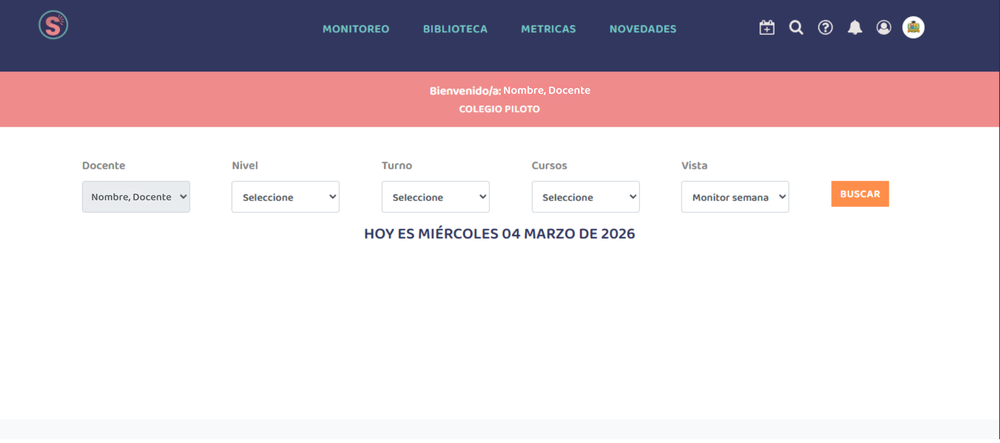
| Filtro | Función | Ejemplo |
|---|---|---|
| Docente | Aparece preseleccionado con tu nombre de usuario | Nombre del docente |
| Nivel | Filtra por nivel educativo donde das clase | Secundario, Primario |
| Turno | Selecciona el turno en el que se dictan las clases | Mañana, Tarde, Noche |
| Cursos | Ver todas tus divisiones o una en particular | 2do A / Todos |
| Vista | Cambia el modo de visualización del calendario | Monitor semanal / Mensual |
Una vez elegidos los filtros, hacé clic en el botón naranja BUSCAR. El sistema va a mostrar tu calendario con las clases que coincidan con esa búsqueda.
El calendario semanal te permite visualizar todas tus clases de la semana actual. Podés navegar entre diferentes semanas para revisar planificaciones pasadas o preparar las próximas clases.
![Weekly calendar interface displaying a 7-day view with color-coded class blocks representing scheduled lessons. Each day column shows time slots with blocks labeled with course names, instructor information, and class states. Green blocks indicate completed and closed planning, yellow blocks indicate unscheduled time slots, and accent-colored blocks show recalendarized classes. The calendar grid includes navigation arrows to move between weeks and a summary panel showing class details upon selection, with icons indicating different status types.](img/monitor_semanal.png)
El calendario semanal es donde podés ver el estado de todas tus clases calendarizadas de un vistazo. Cada bloque tiene íconos que te informan qué acción realizar en cada clase.
![Weekly calendar interface displaying a 7-day view with color-coded class blocks representing scheduled lessons. Each day column shows time slots with blocks labeled with course names, instructor information, and class states. Green blocks indicate completed and closed planning, yellow blocks indicate unscheduled time slots, and accent-colored blocks show recalendarized classes. The calendar grid includes navigation arrows to move between weeks and a summary panel showing class details upon selection, with icons indicating different status types.](img/monitor-semanal2.png)
Te permite acceder a la planificación ya creada para completar la estrategia metodológica, evaluación y actividad de cada clase, además de visualizar los comentarios del directivo y el estado de la misma.
Te permite eliminar la planificación creada de esa clase.
Te permite acceder a la pestaña de recalendarización para gestionar las clases y reprogramarlas.
Corresponde a ese día y horario actual.
Seleccioná la vista mensual para visualizar todo el calendario con mayor detalle. Esta vista te permite ver el mes completo con todas tus clases organizadas, facilitando una mejor planificación y seguimiento de tus actividades docentes.
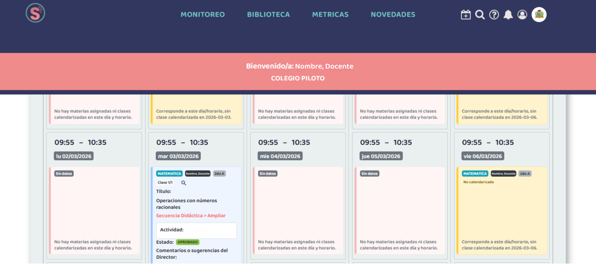
Planificar en Sabium es diferente a escribir en Word. No escribís desde cero: seleccionás los ejes y contenidos del diseño curricular ya cargado, indicás la cantidad de clases, y el sistema los calendariza automáticamente en tu horario.
Desde tu calendario, hacé clic en el nombre de la materia. Se abre la pantalla con dos columnas: Ejes y Contenidos (izquierda) y Contenidos Seleccionados (derecha).
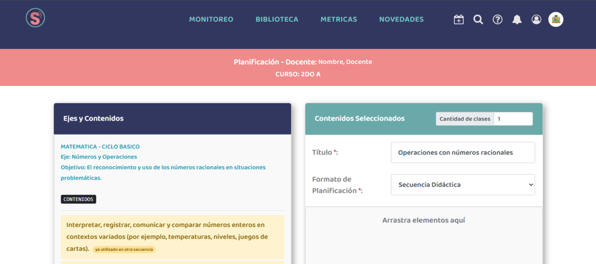
| Campo | Qué hacer |
|---|---|
| Título * | Escribí el nombre de la planificación (ej: "Matemática - Operaciones con números racionales") |
| Formato de Planificación * | Seleccioná el tipo: Proyecto Áulico, Proyecto Institucional, Taller, u otros disponibles |
| Cantidad de clases | Indicá cuántas clases va a tener esta planificación. Sabium las distribuirá en tu horario automáticamente. |
En la columna izquierda ves los ejes y contenidos del diseño curricular de tu materia. Hacé clic en los contenidos que vas a trabajar y arrastralos para agregarlos a la columna derecha "Contenidos Seleccionados". Los contenidos marcados en amarillo ya fueron usados en otra secuencia.
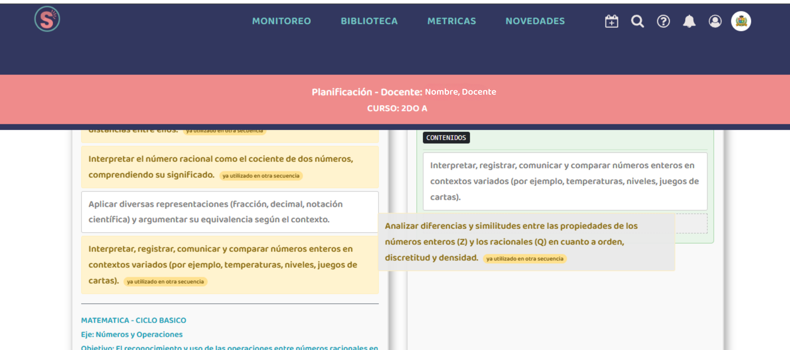
Una vez creada la planificación y asignados los contenidos, Sabium genera las clases individuales. Para cada clase tenés que completar el detalle pedagógico: estrategia, tipo de evaluación y actividad.
Desde el calendario, hacé clic sobre el ícono del calendario . Se abre el modal de "Planificación de la materia" con el encabezado que muestra la materia, fecha, horario, curso y tu nombre.
![Class planning modal showing course name, date, time, class code, and instructor name at the top. Below are input fields for pedagogical strategy with a dropdown menu for teaching methods such as expository lesson or Socratic dialogue. Adjacent field for evaluation type with options for diagnostic, formative, or oral assessment. Large text area for detailed activity description where teachers can write complete lesson plans. At bottom are three action buttons: Save Activity button in orange, Class Planning button to calendar and close the individual class, and Complete Planning button in orange to finalize all classes in the sequence at once. Navigation arrows visible at sides to move between classes in the same planning sequence.](img/detalle-planificacion.png)
| Campo | Qué completar | Ejemplos |
|---|---|---|
| Estrategia Metodológica | Cómo vas a enseñar esa clase | Clase expositiva, Clase dialogada o socrática, Clase invertida (Flipped classroom)… |
| Evaluación | Tipo de evaluación de esa clase | Diagnóstica, Formativa, Oral, Escrita, Autoevaluación… |
| Actividad | Descripción libre de lo que van a hacer los estudiantes | Podés escribir el desarrollo completo de la actividad |
![Class planning interface modal showing course name, date, time, instructor information at the top, followed by input fields for pedagogical strategy with dropdown menu containing teaching methods, evaluation type field with assessment options, and large text area for activity descriptions. At the bottom are three action buttons: Save Activity in orange, Class Planning button to return to calendar, and Complete Planning button in orange. Navigation arrows visible at sides to move between classes in the same sequence.](img/detalle-planificacion2.png)
En la parte inferior del modal encontrás los botones de acción. Es importante entender la diferencia entre cada uno:
Guarda solo la actividad de esta clase. Podés seguir editando después.
Descarga en pdf esta clase individualmente.
Descarga en pdf todas las clases de la planificación.
Usá las flechas ‹ › en los bordes del modal para pasar de una clase a la siguiente sin cerrar. Así podés completar varias clases seguidas de forma eficiente.
Cuando tu directivo o coordinador pedagógico deja un comentario en una de tus clases, aparece directamente en el modal de esa clase, en el campo "Comentarios o sugerencias del Director". No necesitás revisar emails separados.
Abrí el detalle de cualquier clase haciendo clic sobre el ícono del calendario . En la parte inferior del modal, debajo del campo "Actividad", vas a ver la sección "Comentarios o sugerencias del Director".
El sistema te va a notificar cuando tu directivo deje un comentario. También podés revisar el campo al abrir cualquier clase. Si el campo dice "Sin datos", todavía no hay comentarios del directivo para esa clase.
Debajo del feedback del directivo también aparece el Estado que asignó tu directivo a la planificación (ej: "Sin informar", "Aprobada", "En revisión", etc.). Este campo lo gestiona el directivo, no vos.
Esta es una de las funciones más importantes de Sabium. Te permite mover una clase que ya fue planificada a una nueva fecha dentro del calendario. Cuando realizás ese cambio, el sistema no solo actualiza esa clase puntual, sino que también reacomoda automáticamente las clases que siguen en la secuencia, para mantener el orden pedagógico y la continuidad de los contenidos. De esta manera, podés ajustar tu planificación ante cambios de agenda sin tener que reorganizar manualmente cada clase una por una.
En el calendario semanal, el ícono aparece en todas las clases planificadas al lado del nombre de la materia. Ese ícono sirve para acceder a la pestaña de recalendarización, desde donde podés mover una clase a otra fecha y reordenar la secuencia según necesites.
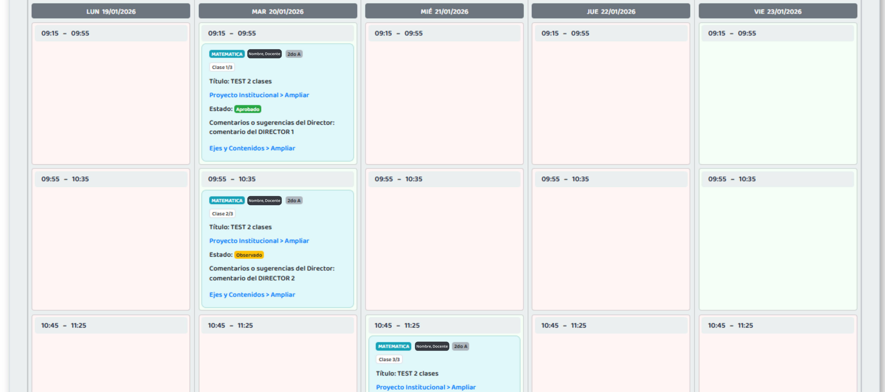
Las celdas de color verde son aquellas donde podés mover la clase sin problemas. Las celdas de color rojo son franjas horarias no disponibles para esa materia, donde no es posible trasladar la clase.
En la pantalla de recalendarización, arrastrá la clase al día y horario donde querés trasladarla. El sistema te mostrará un modal de confirmación con los detalles. Si está correcto, hacé clic en "Aceptar". Las clases siguientes de la secuencia se reacomodan automáticamente.
![Weekly calendar view showing class scheduling interface. Multiple weeks are displayed horizontally. Days of the week are shown across the top from Monday through Sunday. Subject names with book icons appear as scheduled entries throughout the calendar grid. Navigation arrows on the left side allow movement between week views. A yellow highlighted block labeled No calendarizada indicates an unscheduled class that has not yet been assigned to a calendar date. Green cells show available time slots for rescheduling. Red cells indicate time slots that are unavailable for that specific subject. This interface demonstrates how pending classes accumulate in future weeks when calendar adjustments are needed.](img/recalendarizacion3.png)
Una vez confirmado el movimiento, la pantalla se actualiza mostrando la nueva distribución de tus clases. La clase que moviste ahora aparece en la nueva fecha y horario, y todas las clases siguientes de la secuencia quedan reacomodadas en orden. Podés revisar que todo haya quedado como lo planeabas antes de cerrar la pantalla de recalendarización.
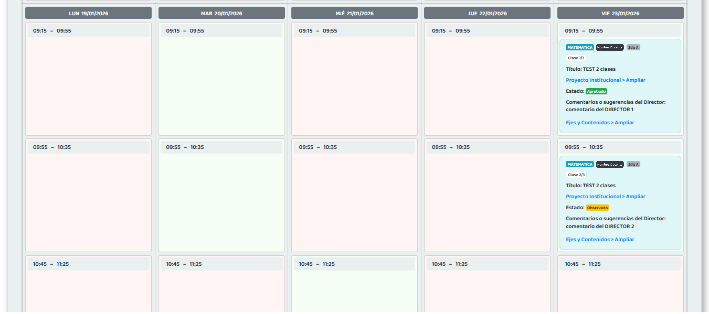
Sabium te permite generar tus propios reportes de planificación y ver métricas sobre tu práctica docente. Son herramientas útiles para la autoevaluación y para preparar reuniones institucionales.
Desde el menú accedé a Biblioteca. Configurá los filtros para ver solo tus clases.
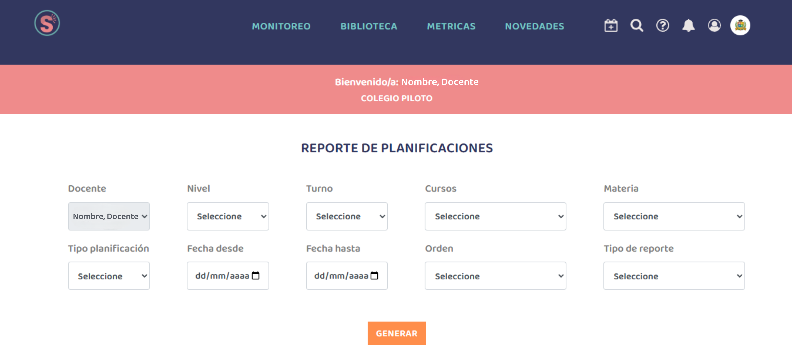
Desde MÉTRICAS podés ver gráficos que muestran la distribución de tus clases.
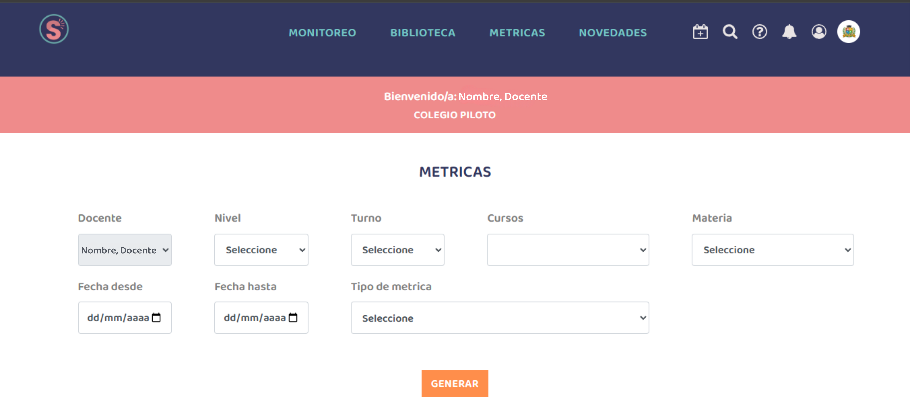
En MÉTRICAS, vas a encontrar tres tipos de indicadores que te permiten evaluar distintos aspectos de tus clases.
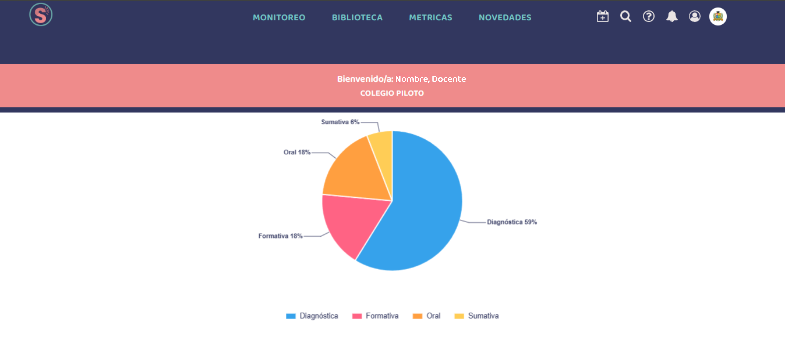
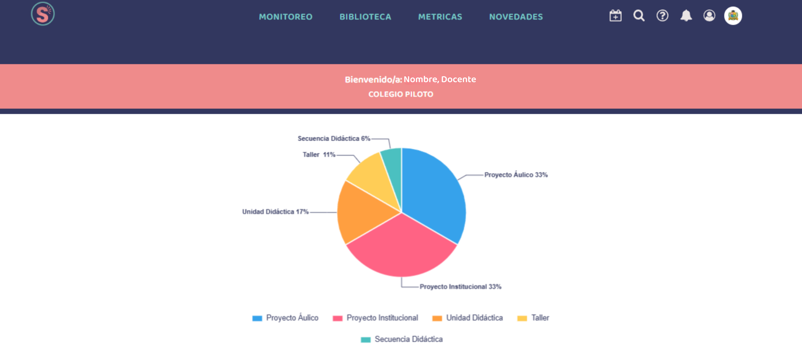
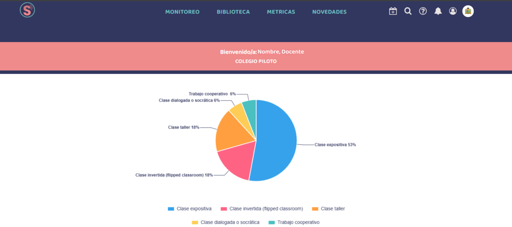
Estas métricas te permiten reflexionar: ¿Estoy diversificando mis estrategias? ¿Qué tipo de evaluación predomina en mis clases?
| Pregunta | Respuesta |
|---|---|
| ¿Puedo cargar las notas de mis alumnos en Sabium? | No. Sabium no tiene módulo de calificaciones. Para notas y boletines usá el sistema de gestión de tu institución. |
| ¿Puedo usar Sabium para hablar con los padres? | No. Sabium es una herramienta exclusivamente pedagógica e institucional, sin comunicación con familias. |
| ¿Cómo puedo mover una clase a otra fecha? | En el calendario, usá el ícono de recalendarización para acceder a la pantalla de movimiento. Arrastrá tu clase al nuevo día y horario (celdas verdes). Confirmá los cambios y el sistema reacomodará automáticamente las clases siguientes de la secuencia. |
| ¿Mi directivo puede ver mis planificaciones en tiempo real? | Sí. Una vez que calendarizás una clase, tu directivo puede verla. Recibís notificación cuando deja un comentario en tus planificaciones. |
| ¿Puedo ver métricas de mis clases? | Sí. En la sección MÉTRICAS podés ver gráficos que muestran la distribución de tus estrategias metodológicas, tipos de evaluación y tipos de planificación que utilizás. |
| ¿Cómo genero un reporte de mis planificaciones? | Accedé a la sección Biblioteca y configurá los filtros (docente, nivel, turno, curso, materia, fechas, etc.). Podés generar reportes "Simplificado" o "Ampliado" según necesites. |
| ¿Dónde estén disponibles los diseños curriculares? | Los diseños curriculares con ejes y contenidos ya están integrados en Sabium. Al crear una planificación, podés seleccionar los ejes y contenidos del currículum para tu nivel y materia. |
| ¿Sabium genera boletines o informes de alumnos? | No. Los reportes de Sabium son sobre la planificación docente, no sobre el rendimiento de los alumnos. |
El equipo de Sabium está disponible para acompañarte en cada paso de la implementación.
Sabium Aulas a un Clic · Plataforma educativa argentina
Planificación · Calendarización · Seguimiento pedagógico